General Knowledge
569 no-prep General Knowledge resources with answer keys: reading comprehension, reading trails, and more – filter by grade.
569 resources
Grade

Family Life Reading Comprehension Passages | Life Skills Scavenger Hunt 5-6

Figurina – Italian Reading: Cloze Text, Listening Task & Word Search (Scheda)

Fertilizzante – Italian Reading: Cloze, Listening & Word Search

Ferrovia – Italian Reading: Cloze Text, Listening Task & Word Search (Scheda)

Febbre – Italian Reading: Cloze Text, Listening Task & Word Search (Scheda)
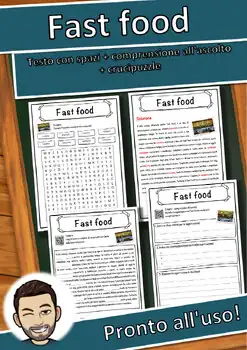
Fast food – Italian Reading: Cloze Text, Listening Task & Word Search (Scheda)
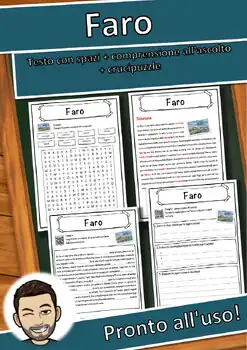
Faro – Italian Reading: Cloze Text, Listening Task & Word Search (Scheda)
Farina – Italian Reading: Cloze Text, Listening Task & Word Search (Scheda)
Falegname – Italian Reading: Cloze Text, Listening Task & Word Search (Scheda)
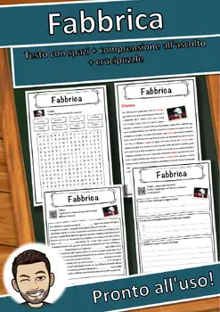
Fabbrica – Italian Reading: Cloze Text, Listening Task & Word Search (Scheda)
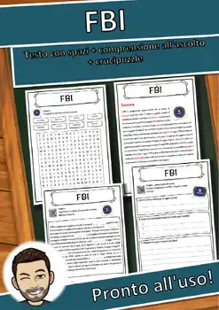
FBI – Italian Reading: Cloze Text, Listening Task & Word Search (Scheda)
Euro – Italian Reading: Cloze Text, Listening Task & Word Search (Scheda)
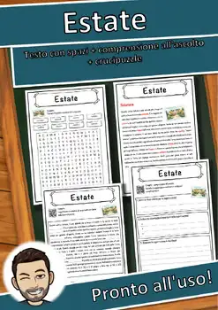
Estate – Italian Reading: Cloze Text, Listening Task & Word Search (Scheda)
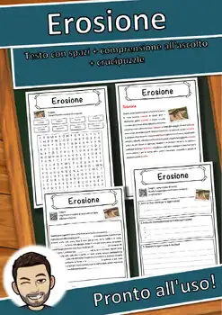
Erosione – Italian Reading: Cloze Text, Listening Task & Word Search (Scheda)
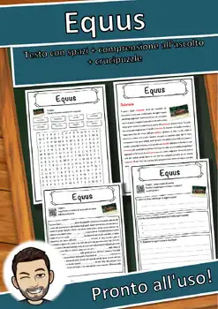
Equus – Italian Reading: Cloze Text, Listening Task & Word Search (Scheda)
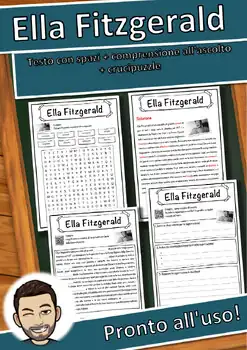
Ella Fitzgerald – Italian Reading: Cloze, Listening & Word Search
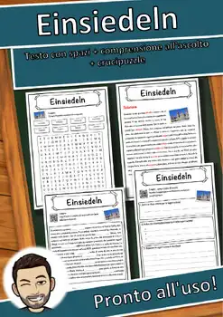
Einsiedeln – Italian Reading: Cloze Text, Listening Task & Word Search (Scheda)
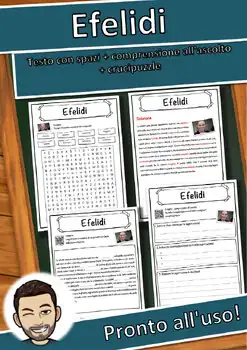
Efelidi – Italian Reading: Cloze Text, Listening Task & Word Search (Scheda)
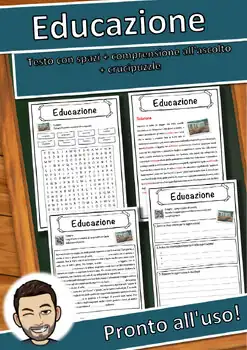
Educazione – Italian Reading: Cloze Text, Listening Task & Word Search (Scheda)
Educatore – Italian Reading: Cloze Text, Listening Task & Word Search (Scheda)
Eclissi solare – Italian Reading: Cloze, Listening & Word Search
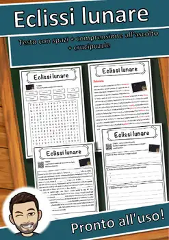
Eclissi lunare – Italian Reading: Cloze, Listening & Word Search
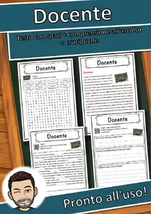
Docente – Italian Reading: Cloze Text, Listening Task & Word Search (Scheda)
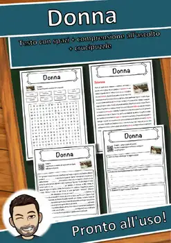
Donna – Italian Reading: Cloze Text, Listening Task & Word Search (Scheda)
Donazione del sangue – Italian Reading: Cloze, Listening & Word Search
Dollaro – Italian Reading: Cloze Text, Listening Task & Word Search (Scheda)
Distillazione – Italian Reading: Cloze, Listening & Word Search
Disoccupazione – Italian Reading: Cloze, Listening & Word Search
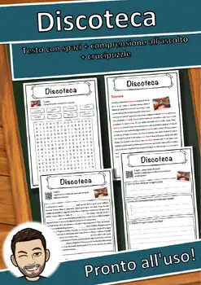
Discoteca – Italian Reading: Cloze Text, Listening Task & Word Search (Scheda)
Disastro – Italian Reading: Cloze Text, Listening Task & Word Search (Scheda)
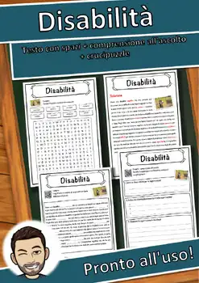
Disabilità – Italian Reading: Cloze Text, Listening Task & Word Search (Scheda)
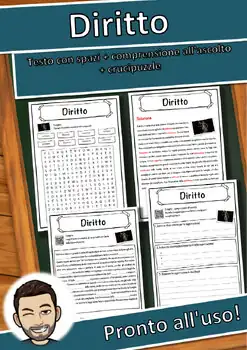
Diritto – Italian Reading: Cloze Text, Listening Task & Word Search (Scheda)
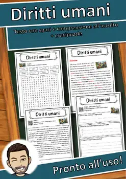
Diritti umani – Italian Reading: Cloze, Listening & Word Search
Diplomazia – Italian Reading: Cloze Text, Listening Task & Word Search (Scheda)

Diego Armando Maradona – Italian Reading: Cloze, Listening & Word Search
Die Toten Hosen – Italian Reading: Cloze, Listening & Word Search
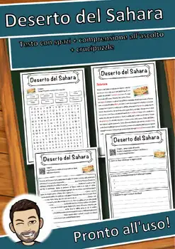
Deserto del Sahara – Italian Reading: Cloze, Listening & Word Search
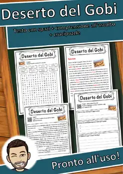
Deserto del Gobi – Italian Reading: Cloze, Listening & Word Search
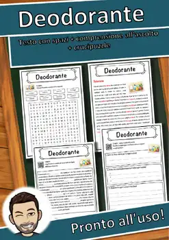
Deodorante – Italian Reading: Cloze Text, Listening Task & Word Search (Scheda)
Dentifricio – Italian Reading: Cloze Text, Listening Task & Word Search (Scheda)
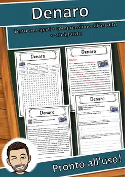
Denaro – Italian Reading: Cloze Text, Listening Task & Word Search (Scheda)
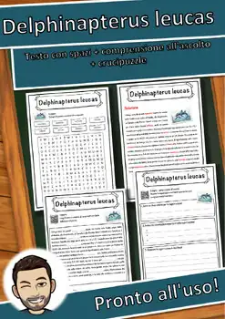
Delphinapterus leucas – Italian Reading: Cloze, Listening & Word Search
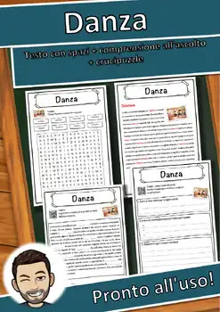
Danza – Italian Reading: Cloze Text, Listening Task & Word Search (Scheda)
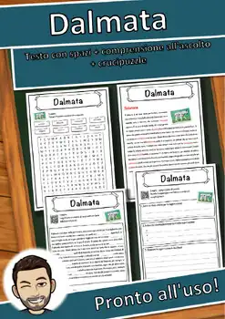
Dalmata – Italian Reading: Cloze Text, Listening Task & Word Search (Scheda)
Dalai Lama – Italian Reading: Cloze Text, Listening Task & Word Search (Scheda)
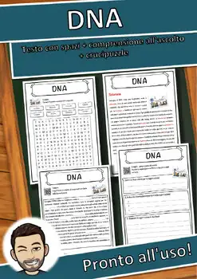
DNA – Italian Reading: Cloze Text, Listening Task & Word Search (Scheda)
Cuore – Italian Reading: Cloze Text, Listening Task & Word Search (Scheda)
Cuoco – Italian Reading: Cloze Text, Listening Task & Word Search (Scheda)
No resources found – try a different search term or filter.